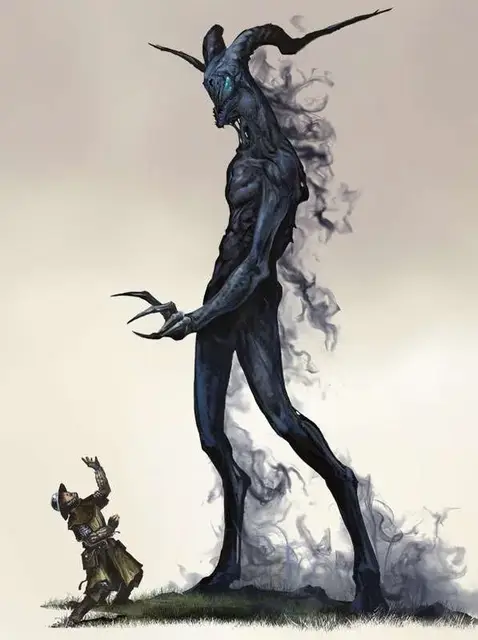

Ночной ходок
Nightwalker
Огромная Нежить, хаотично-злая

Класс Доспеха 14
Хиты 297 (22к12 + 154)
Скорость 40 футов, летая 40 футов
| мод | спас | ||
|---|---|---|---|
| СИЛ | 22 | +6 | +6 |
| ЛОВ | 19 | +4 | +4 |
| ТЕЛ | 24 | +7 | +13 |
| мод | спас | ||
|---|---|---|---|
| ИНТ | 6 | −2 | −2 |
| МДР | 9 | −1 | −1 |
| ХАР | 8 | −1 | −1 |
Сопротивление урону звук, кислота, огонь, холод, электричество; дробящий, колющий, рубящий от немагических атак
Иммунитет к урону некротическая энергия, яд
Иммунитет к состояниям окаменение, опутанность, отравление, сбивание с ног, захват, паралич, испуг, истощение
Чувства тёмное зрение 120 футов, пассивное Восприятие 9
Опасность 20 (25000 опыта)
Бонус мастерства +6
Среда обитания Арктика, Болото, Подземье, Пустыня
Особенности
Разрушительная аура. Каждое существо, начинающее ход в пределах 30 футов от ночного ходока, должно преуспеть в спасброске Телосложения Сл 21, иначе получит 14 (4к6) урона некротической энергией и предоставит ночному ходоку совершать с преимуществом броски атаки по себе до начала своего следующего хода. Нежить невосприимчива к этой ауре.
Пожиратель жизни. Существо, чьи хиты опускаются до 0 от нанесённого ночным ходоком урона, умирает и не может быть воскрешено любыми способами, кроме как заклинанием исполнение желаний [wish].
Действия
Мультиатака. . Ночной ходок использует изнуряющую концентрацию дважды, или использует изнуряющую концентрацию и перст погибели, если это возможно.
Изнуряющая концентрация. Рукопашная атака оружием: +12 к атаке, досягаемость 15 футов, одна цель. Попадание: 28 (5к8 + 6) урона некротической энергией. Цель должна преуспеть в спасброске Телосложения Сл 21, иначе её максимальное значение хитов уменьшится на значение причинённого атакой урона. Это понижение длится до завершения продолжительного отдыха.
Перст погибели (перезарядка 6). Ночной ходок выбирает целью одно существо в пределах 300 футов своей видимости. Цель должна преуспеть в спасброске Мудрости Сл 21, иначе получит 26 (4к12) урона некротической энергией, а также станет испуганной до конца следующего хода ночного ходока. Пока цель испугана таким образом, она также парализована. Если же спасбросок был успешным, цель станет невосприимчивой к Персту погибели в течение 24 часа.
Описание
Отрицательный план – место, где правят тьма и смерть; анафема для всего живого. И тем не менее, есть те, кто готов принять эту мрачную силу, чтобы использовать её для своих зловещих целей. Зачастую подобные личности, приблизившись к полуночному царству, понимают, что оказались не готовы к такой участи. Тех, кого полностью не стирают с лица земли, иногда затягивает внутрь плана, а вместо него выходит ночной ходок –ужасающее существо-нежить, пожирающее всю жизненную энергию, с которой только столкнётся.
Могучее отродье. Попасть в Отрицательный план можно из Царства Теней, точно так же, как и попасть в само Царство Теней можно попасть из Материального плана в том месте, где грань между мирами тонка.
Переход в Отрицательный план равносилен самоубийству, так как в момент перехода из осмелившихся на это глупцов в мгновение ока высасывается вся жизнь и душа, после чего их тело уничтожается. Такую участь могут пережить лишь те, на чьей стороне удача, или кто обладает некой редкой формой магии, что защищает их от враждебной атмосферы плана. Тем не менее, вскоре они понимают, что не смогут так просто выйти, как смогли войти. Поскольку, за каждое существо, что смогло проникнуть в план, из плана вырывается ночной ходок, заменяющий это существо. Чтобы застрявшее существо смогло выйти, необходимо, чтобы кто-то или что-то затащило ночного ходока обратно в Отрицательный План. Если ночной ходок умрёт, то у застрявшего существа больше нет никакого шанса выбраться наружу.
Воплощения анти-жизни. Можно распознать природу существ, застрявших в Отрицательном Плане по месту обитания ночного ходока. Обычно, ночного ходока в Материальном Плане тянет к тем местам, которые связанны с существом, по чьей вине вышел ночной ходок. Такой интерес у ночных ходоков не указывает на их волю взаимодействовать с миром, а наоборот, они существуют ради того, чтобы истребить саму жизнь и никогда не служить живым существам.
Природа нежити. Ночной ходок не нуждается в воздухе, пище, питье или сне.